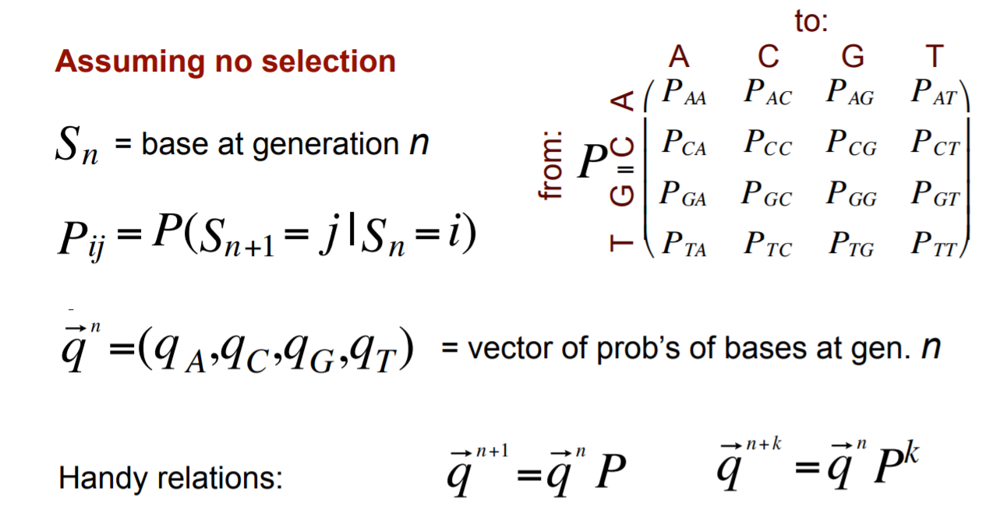
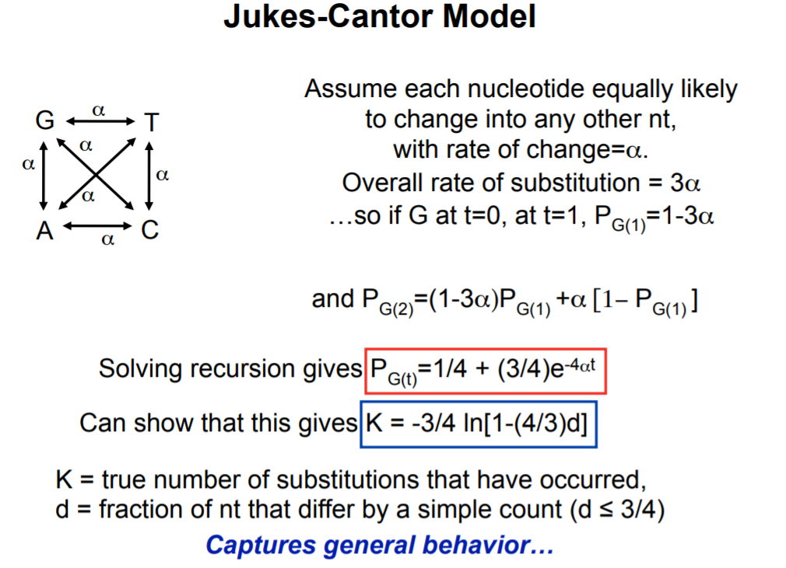
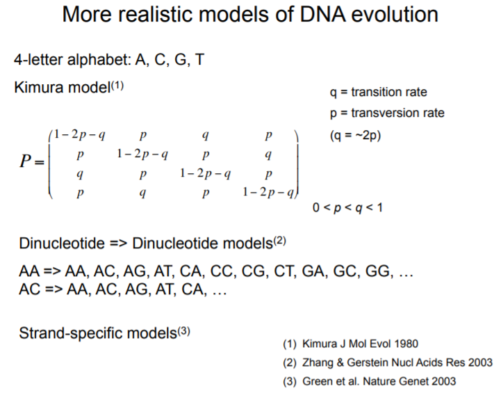

承接上一篇Global Alignment of Protein Sequence马尔科夫链的部分继续。马尔科夫链在学随机过程或者计算机模拟的时候都会学到，这里主要讲述它在基因序列上的应用。
马尔科夫链
将多个试验结果按时间标记为一系列“前后相继”的状态: $x_1,x_2,⋯$
也称为离散时间马尔可夫链(discrete-time Markov chain): 描述从状态$x_i$到状态$x_j$的转换的随机过程;
马尔可夫性质(无记忆性): 下一状态的概率分布只能由当前状态决定,在时间序列中它前面的事件均与之无关
推广到连续时间状态$x(t)$的情形，统称：Markov 过程
这里面需要掌握的是
1.状态转化概率构成的转移矩阵
一个行向量$v_{(1\times n)}$表示状态概率，一个矩阵$P_{n\times n}$为转移矩阵，则下一状态概率为$vP$，可以画一下状态转移图理解。这个矩阵每一行的和为$1$。
2.平稳分布
迭代关系 $p_{t+1}=p_t \pi$，有$\pi P=\pi$，则$\pi$为其极限分布，记$\lim_{n\rightarrow \infty}p_n=\pi$
Perron-Frobenius 定理
如果概率转移矩阵$𝑃$满足$𝑝_{(i,j)} > \delta > 0, \forall i,j$，那么有
（1）𝑃存在特征值为$1$且对应的左特征向量$𝒘$严格为正，且唯一
（2）如果此特征向量被归一化则进一步有
$$ lim_{n\rightarrow \infty} P^n =1w $$
- 需要注意的是这个左特征向量存在的条件很低，可是说总是存在的，但是这不一定是任意初始向量的迭代极限，参考马氏链定理的条件：非周期的转移概率矩阵，任何两个状态是连通的。$\pi$是$\pi P=\pi$的唯一非负解，$\pi$称为马氏链的平稳分布。
3.细致平稳条件
如果非周期马氏链的转移矩阵$P$和分布$\pi(x)$满足
$$\pi (i)P_{ij}=\pi (j) P_{ji},\ \forall i,j$$
则$\pi(x)$是马氏链的平稳分布，上式被称为细致平稳条件。
下面看一下其在DNA序列进化的应用。

因此，如果矩阵中的所有元素都大于$0$，那么所有的$p_{ij}$当然都必须大于$0$，而对$j$求和等于$1$。无论从哪个碱基开始，变为这四个碱基之一的概率总和为1。最后碱基比例将有其平稳分布。
该理论表示最后的分布仅取决于转移矩阵$P$。它不依赖于起始的碱基序列分布$q$。因此，它取决于变化如何发生的模型–给定当前代的碱基分布下一代碱基分布的条件概率。
一些例子，考虑嘌呤、嘧啶之间的突变，2-letter alphabet: R = purine, Y = pyrimidine
- 二阶对称[1-p,p;p,1-p]，平稳分布(0.5,0.5)
- 二阶非对称[1-p,p;q,1-q]，平稳分布(q/(p+q),p/(p+q))
- 二阶单位阵I: [1,0;0,1]，任意分布都是不变的，它没有突变，可以停留在任意状态
- [0,1;1,0]，总是在突变，它有平稳分布(0.5,0.5)，虽然这并不是任意状态的极限，而且注意到这个矩阵的周期为2。Stationary but not unique limiting distribution
Jukes-Cantor Model

红框标注的公式表明，它收敛到平稳分布的概率1/4是指数，非常快的收敛速率。
蓝框标注的共识表明真实发生的碱基替换次数可能比观察到的替换多得多。
更详细地说，如果d小，则证明k非常类似于d。它在开始时随d线性增长。因为k是发生的真实替换数，当考察对象是同一代时，真实的替换数和测得的替换数是相同的。因为没有反向突变。但是，当观察的代数更多，对于一个长时间的情况，反向突变的可能性会越来越大，突变的可能性也会增加，因此有反向突变的可能性就会增加。所以基本上，这里是线性的。
接下来就是像蓝色框的那个函数那样上升（可以画一画，很快趋于正无穷）。因此，在对d进行观测后想知道k。如果是测量人与黑猩猩序列之间的差异，可能仅相差1％。如果对每一代都有突变率有估计，那么将可以计算出自人类自黑猩猩开始进化相隔了几代，或经过了多少时间。
但是，如果使用小鼠，则可能只有50％的匹配，如此会有很多变化。许多碱基改变了一次，以及许多碱基改变了两次……那50％的相同性，不能直接将它与黑猩猩的1％进行比较，并说它相隔的代数长50倍。由于反向突变的存在，这将是对真实差异的低估。因此必须使用此公式来计算出真正的进化时间，发生变化的真实数量。
更实际的模型
- Kimura models
DNA取代突变有两种类型。过渡transition是二环嘌呤（AG）或一环嘧啶（C T）的互换：因此，它们涉及相似形状的碱基。转化transversion是嘌呤与嘧啶碱基的互换，因此涉及一环和二环结构的交换。
木村（Kimura）和其他人观察到，transition发生的次数比transversion发生的次数多得多，可能是transversion的次数的两到三倍，因此提出了如下转换矩阵。

它仍然是对称的，在求平稳分布依旧会得到1/4。
- Dinucleotide models
后来又有其他人观察到二核苷酸对突变率很重要，尤其是在脊椎动物中。脊椎动物的特殊之处在于它们具有甲基化机制，可以使C上的CPG二核苷酸甲基化。
这使得这些C超可变。它们的变异速率约为其他任何碱基的10倍。因此，可以给C更高的突变率，但是实际上，C只有出现在G旁边才会由于甲基化机制使得突变率变得很高。因此，可以定义一个16乘16的模型，该模型具有二核苷酸突变率，这实际上是DNA序列进化的更好模型。同样可以计算它的平稳分布，也容易模拟。
- Strand-specific model
特定于链的模型，处理与转录偶联修复相关的两条DNA链之间存在一些差异，实际上在那里出现了一些不对称性。
同义突变和非同义突变
dN = Ka = nonsynonymous substitutions / nonsynonymous sites
dS = Ks = synonymous substitutions / synonymous sites
非同义替换nonsynonymous substitutions更改了密码子，从而更改了编码的氨基酸，定义一个称为Ka或dN的术语，为非同义替换在非同义位点占的比例。相应的有Ks或dS，为同义替换synonymous substitutions除以同义位点。
比率Ka/Ks or dN/dS ratio的应用
假设将所有人类基因与小鼠中的直系同源物进行了比对，也就是小鼠中相应的同源基因。然后计算Ka，Ks，可以查看该比率显着小于1或大约1或大于1的那些基因，可以了解该基因正在经历的选择类型。
- Ka/Ks 远小于1
说明这个氨基酸序列很重要，这些区域可能会被选择以保留氨基酸序列。
因为碱基的突变并不会受是否会改变蛋白质编码影响，因此可以假设这些同义和非同义位点将以相同的速率变异，因此Ka/Ks 远小于1代表着缺少、丢失了非同义的更改。这些非同义的更改中大部分被进化淘汰了，所以只看到极小部分。
因此这个氨基酸序列很重要，或从某种意义上说，它是最佳的。蛋白质在起作用，生物体不想改变它， 或对该蛋白质序列的更改会使该蛋白质变得更糟。
- Ka/Ks 约等于1
如果Ka / Ks接近1，则可能根本不是一个真正的蛋白质编码基因。当然有可能。也可能是因为它是一个伪基因。或它是有机体不再需要的基因。它仍然编码蛋白质，但是有机体只是在乎其功能。
这可能会在其他时间演变。比如说，当温度低于零下20时，这个蛋白质可以帮助适应温度。但是，温度再也不会低于零下20。因此，没有任何选择，或类似的进化，这称为中性进化neutral evolution。
- Ka/Ks显著大于1
这些区域可能处于选择中以改变氨基酸序列。现在的序列是有害的，因此现有的蛋白质对生物不利，因此希望将其更改。
一种非常常见的情况是病毒用来进入细胞的受体，如果这种病毒具有很强的毒性，于是想更改该受体，以使该病毒不再攻击它。因此，会发现这种事情很少见。只有不到1％的基因处于正选择状态，这取决于您如何测量它以及观察的时间段。但这往往是改变蛋白质序列的最新选择，最常见的是宿主和病原体之间的这些免疫对抗。